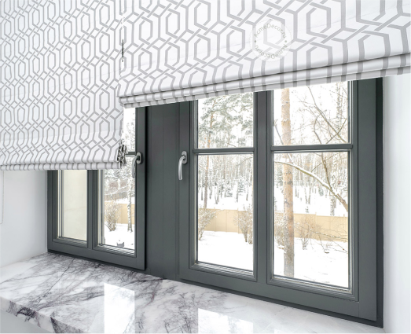
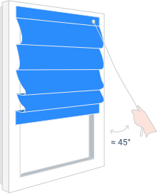
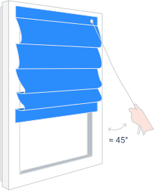

РИМСКИЕ
ШТОРЫ
Изготавливаем римские шторы с учётом всех ваших пожеланий
День-ночь
С автоматикой
С окантовкой
На косое окно
НА ОКНО
НА ПРОЁМ
НА СТЕНУ, В ПРОЁМ
ВЫБИРАЙ ОПЦИИ
Мы оринетруемся на эксклюзивные изделия.
Вы фактически сами собираете штору под свой интерьер
КАРНИЗЫ
С ВЕРЁВОЧНЫМ
УПРАВЛЕНИЕМ
Тихий и экономичный вариант,
для проёмов до 3 метров
 

Кассетные
римские шторы
Карниз
на кронштейны
КАРНИЗЫ
С ЦЕПОЧНЫМ
УПРАВЛЕНИЕМ
Удобная и прочная металлическая цепочка
Устанавливается на окно и штора не провисает при открывании створки
ОКАНТОВКА
С восьмью вариантами исполнения
ДЖЕСТЕР
ЧЕСС
ХАЙВЭЙ
ЛЮВЕРСЫ
КИНГ
ГОРИЗОНТ
ВИКТОРИЯ
СТРИМ ДУО
ДЕНЬ-НОЧЬ
Римская штора день-ночь длинной до трёх метров с двуммя механизмами управления основной шторой и полупрозрачной тюлью. Управлять шторами отдельно, вне зависимости от выбранного карниза. Универсальная конструкция, которую можно устанавить внутри оконного проема, на стену или крепить к потолку
С ТРЕМЯ ВИДАМИ КАРНИЗОВ
ВЕРЁВОЧНЫЙ КАРНИЗ
С бесшумным и простым
верёвочным управлением
ЦЕПОЧНО-РОТОРНЫЙ КАРНИЗ
С удобной, прочной,
металлической цепочкой
ЦЕПОЧНО-РОТОРНЫЙ МИНИ
С компактным и удобным механизмом